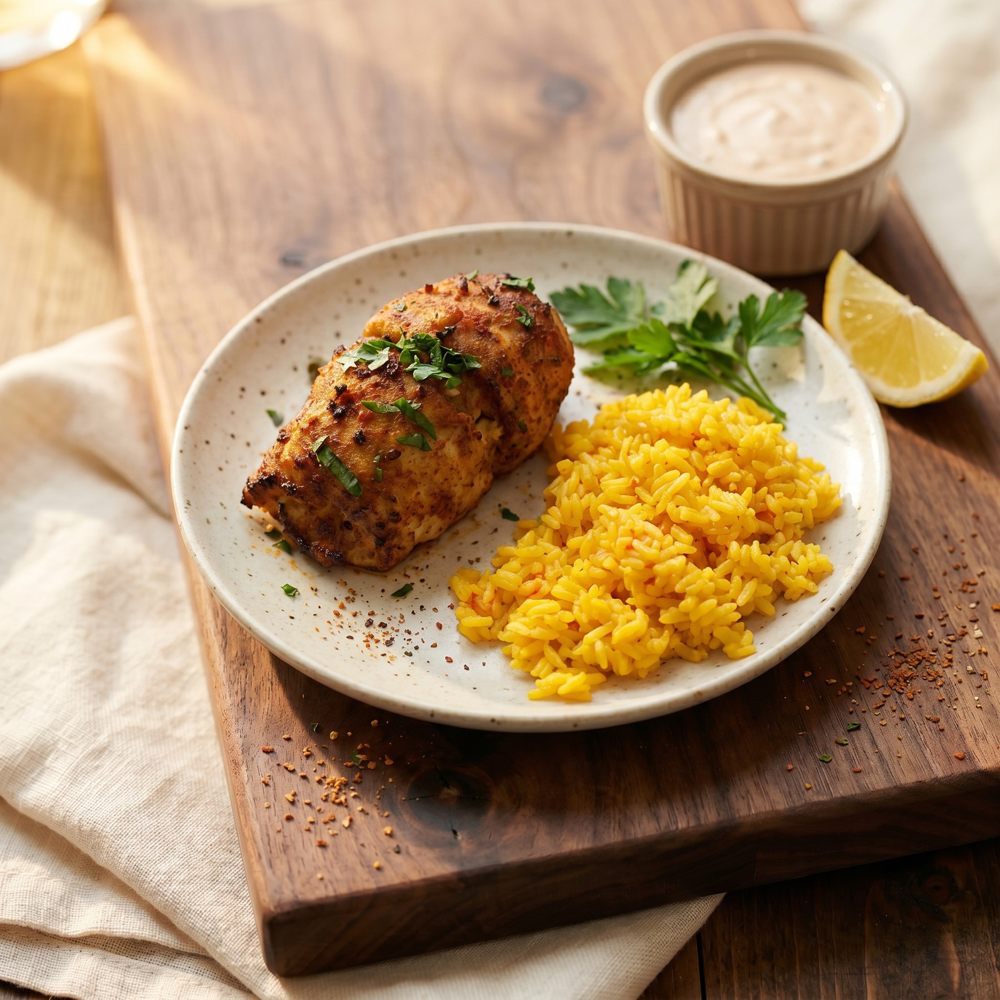
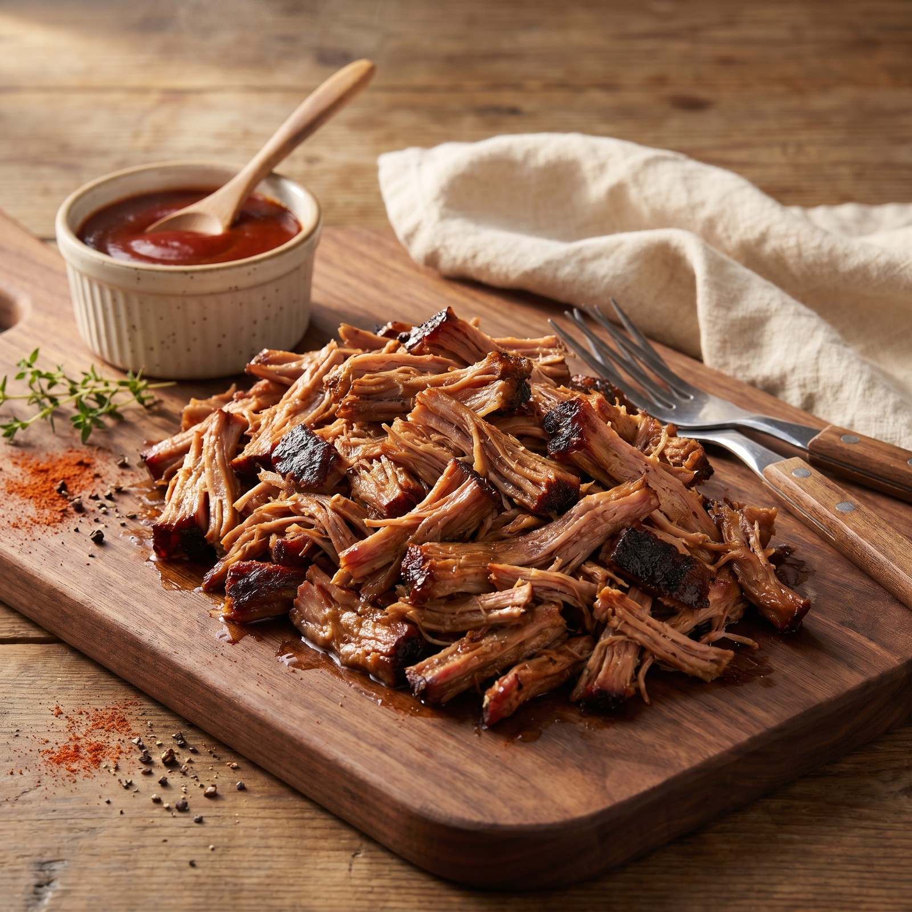
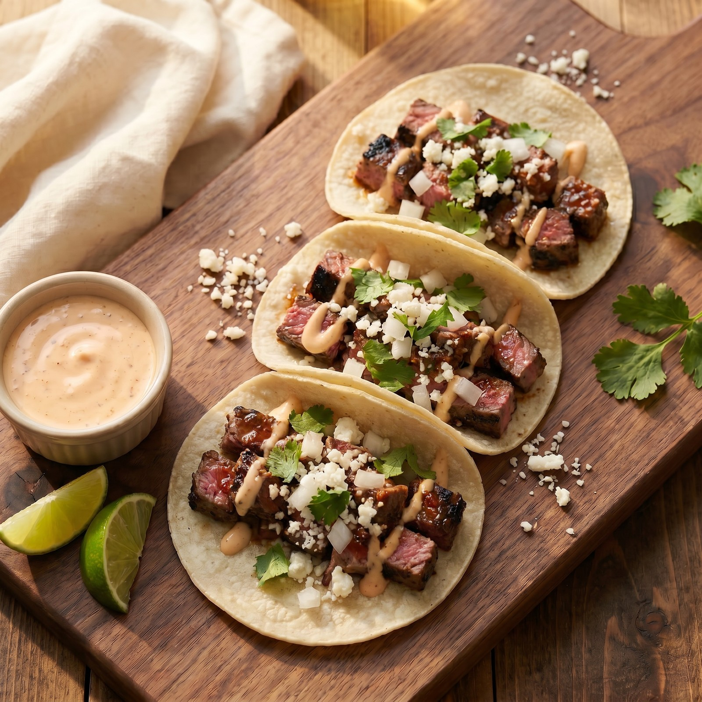
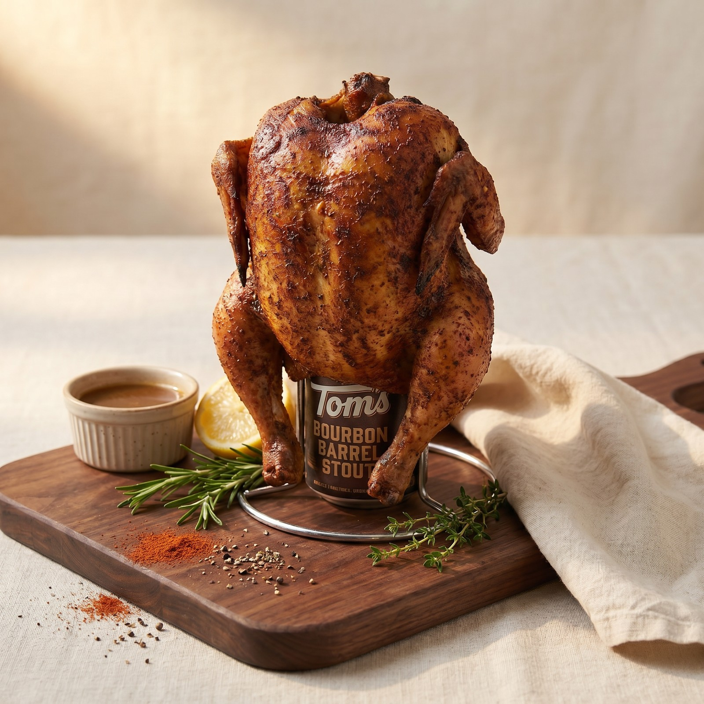
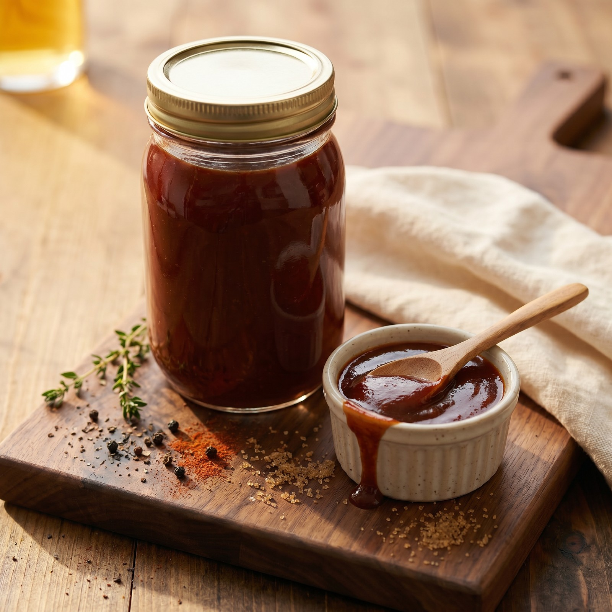

Written down before I forget them. New ones added when one earns its place.

Delicate flounder wrapped around seasoned crab cakes, brushed with Old Bay butter and finished with a quick remoulade.

Tender medium filet, creamy goat cheese, and balsamic glaze on toasted Italian bread. Small bites, big payoff.

Mustard binder, generous rub, apple smoke, then pan-braised at the stall in butter, agave, and apple juice until probe-tender.

An elevated sour with rye, allspice dram, and chocolate bitters. Velvety egg-white foam, warm baking-spice depth, served straight up.

Grilled top sirloin chunks tossed in a smoky chili-spiced pan sauce, tucked into warm corn tortillas with cotija, onion, cilantro, and a bright chili-lime aioli.

Whole chicken propped on a half can of bourbon barrel stout, slow-smoked over apple and pecan wood. Bold-but-mild rub with a built-in spicy version.

A glossy, sweet-leaning house BBQ sauce with deep brown-sugar richness and a soft tang. No-cook — whisk, rest, ladle. Dial the vinegar to taste.